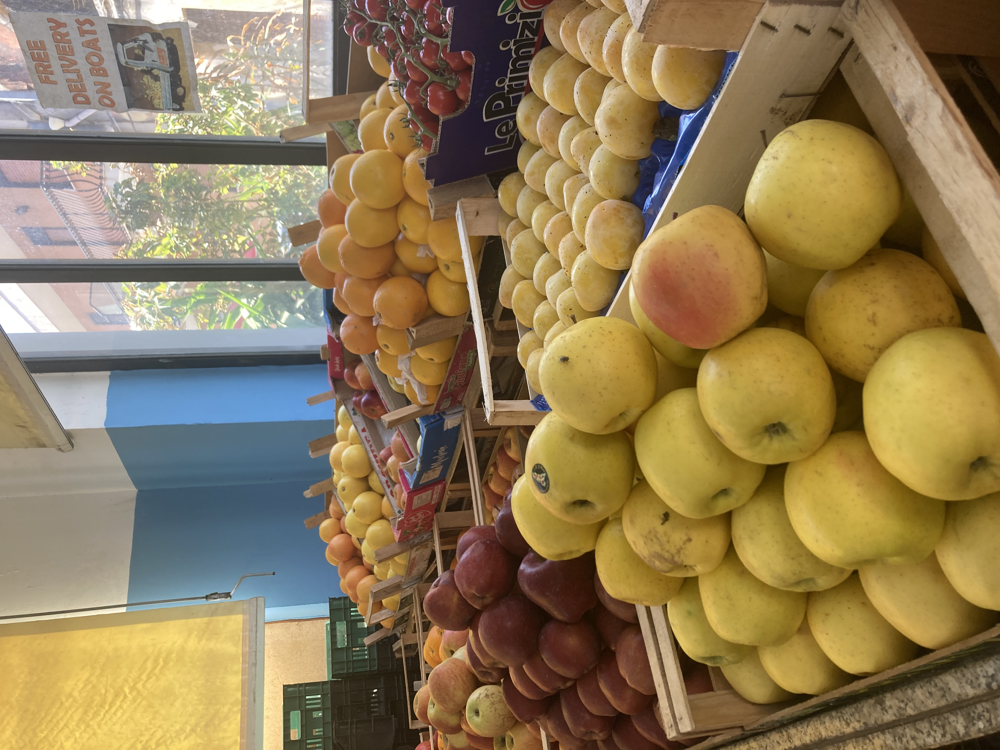

Conscious is a degree exhibition that invites collaboration and seeks to raise awareness. That's all. The exhibition showcases a selection of artworks from three talented artists, each of whom have crafted a captivating collection that delves into the realms of awareness, mindfulness, and wellbeing. The exhibition is an enchanting exploration of the arts and the profound healing power of artistic expression. Uncover the enigmatic allure of life's subtle nuances, transforming the mundane into mesmerising manifestations of elegance. With an air of intrigue, each visually captivating moment reveals a profound insight into our world. Within the intriguing realm of "Conscious," simplicity becomes the focal point, an art of existence that powerfully showcases the interconnectedness of everything. Experience the enchanting allure of this captivating realm where imagination intertwines with awareness.